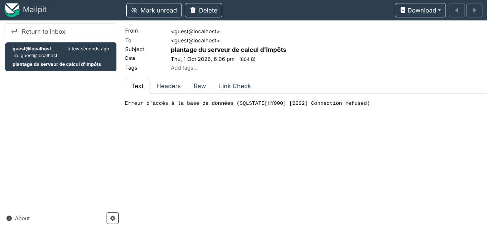
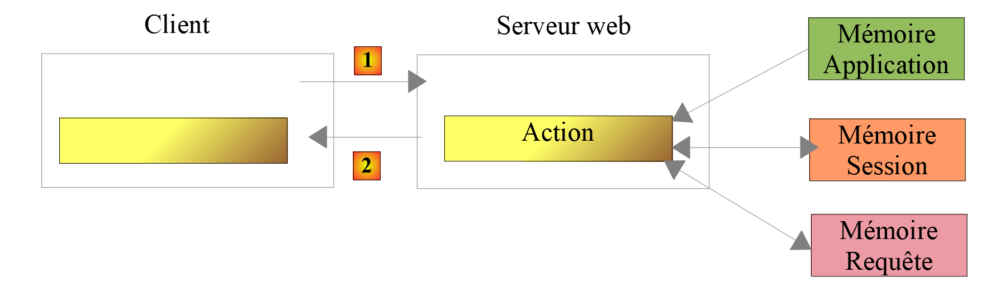

19. Practice Exercise – Version 9
In this version, we will improve the server as follows:
- Currently, with each request, the tax administration data is retrieved from the database. We’ll use a session:
- When a user makes their first request, the tax authority data is retrieved from the database and stored in the session;
- for subsequent requests from the same user, the tax authority data is retrieved from the session. We can expect a slight improvement in execution time since database queries are resource-intensive;
- the session will also ensure that the user is authenticated only once;
- The server will log important events in a text file (logs):
- successful or failed authentication;
- whether the parameters sent by the client are valid;
- the result of the tax calculation;
- various error cases;
- in the event of a fatal error, an email will be sent to the application administrator.
The client will also need to be modified to handle the session cookie that the server will send to it.
19.1. The server
We are focusing on the server-side of the application.

This architecture will be implemented by the following files:
| scripts-web/impots/version-09
├── Dao
│ └── ServerDaoWithSession.php
├── Data
│ ├── .htaccess
│ ├── config-server.json
│ └── logs.txt
├── Tests
│ └── ServerDaoTest.php
├── Utilities
│ ├── Logger.php
│ └── SendAdminMail.php
└── impots-server.php
|
The other files are from versions 5 and 8.
19.1.1. Utilities
19.1.1.1. The [Logger] class
The [Logger] class will be used to write logs to a text file:
| <?php
declare(strict_types=1);
// namespace
namespace Application;
// a log file
final readonly class Logger
{
// constructor: the log file is created if it does not exist
public function __construct(private string $logsFilename)
{
// checks whether the file is writable (by appending an empty string)
if (@file_put_contents($logsFilename, "", FILE_APPEND) === false) {
throw new ExceptionImpots("Echec lors de la création du fichier de logs [$logsFilename]", 50);
}
}
// Write a message to the log file, preceded by the date and time
public function write(string $message): void
{
$date = (new \DateTimeImmutable())->format("d/m/y H:i:s.v");
// FILE_APPEND: Write to the end of the file
// LOCK_EX: the file is locked during writing
file_put_contents($this->logsFilename, "$date : $message\n", FILE_APPEND | LOCK_EX);
}
}
|
Comments
- Line 9: The class is [final] (it cannot be derived from) and [readonly]: its only attribute, the name of the log file, cannot be modified after the object is created;
- line 12: The class constructor takes the log file name as a parameter;
- line 15: We verify that we can write to the file by appending an empty string to it. The flag [FILE_APPEND] ensures that the file is created if it does not exist and that its contents are preserved otherwise. The [@] operator prevents PHP from displaying a warning in case of failure: we handle the error ourselves;
- line 16: if the write operation failed, an exception is thrown;
- line 21: the [write] method writes the [$message] message to the log file, preceded by the date and time. The [d/m/y H:i:s.v] format specifies the day, month, and year (as two digits), followed by the hours, minutes, seconds, and milliseconds;
- Line 26: The function [file_put_contents] opens the file, adds the line to it, and closes it. Therefore, there is no longer a method [close] as in version PHP 7 of the class, which kept the file open between two writes.
The server application may serve multiple clients simultaneously. However, there is only one log file for all of them. There is therefore a risk of concurrent access when writing to the file. Course PHP 7 ignored this problem. Here, the [LOCK_EX] flag instructs [file_put_contents] to lock the file during writing: if another request attempts to write at the same time, it waits until the lock is released. Therefore, a single log line is never mixed with another. However, lines written by two simultaneous requests may be interleaved with one another.
19.1.1.2. The [SendAdminMail] class
The [SendAdminMail] class allows you to send an email to the application administrator in the event of a crash:
| <?php
declare(strict_types=1);
// namespace
namespace Application;
// Symfony Mailer dependencies
use Symfony\Component\Mailer\Mailer;
use Symfony\Component\Mailer\Transport;
use Symfony\Component\Mime\Email;
// sending an email to the application administrator
final readonly class SendAdminMail
{
// $config: Information required to send the email
// $logger: an optional log for recording the result of the transmission
public function __construct(private array $config, private ?Logger $logger = null)
{
}
// Message [$message] sent to the administrator
// The method does not throw an exception: a failed send is only logged
public function send(string $message): void
{
// The email is sent to the server SMTP $this->config["smtp-server"] on port $this->config["smtp-port"]
// from $this->config["from"] to the recipient $this->config["to"]
// with the subject $this->config["subject"] and the attachments $this->config["attachments"]
// if $this->config["tls"] is true, the connection is secure and authenticated
$config = $this->config;
try {
// message creation
$email = (new Email())
->from($config["from"])
->to($config["to"])
->subject($config["subject"])
->text($message);
// attachments
foreach ($config["attachments"] as $attachment) {
if (file_exists($attachment)) {
$email->attachFromPath($attachment);
} else {
$this->logger?->write("La pièce jointe [$attachment] n'existe pas");
}
}
// message transport
$dsn = "smtp://{$config["smtp-server"]}:{$config["smtp-port"]}";
if ($config["tls"]) {
// secure (STARTTLS) and authenticated connection
$verifyPeer = ($config["verify-peer"] ?? true) ? 1 : 0;
$dsn = sprintf("smtp://%s:%s@%s:%d?require_tls=1&verify_peer=%d",
rawurlencode($config["user"]), rawurlencode($config["password"]),
$config["smtp-server"], $config["smtp-port"], $verifyPeer);
}
// message sent
(new Mailer(Transport::fromDsn($dsn)))->send($email);
$this->logger?->write("Message [$message] envoyé à {$config["to"]}");
} catch (\Throwable $ex) {
// failed to send
$this->logger?->write("Erreur lors de l'envoi du message [$message] : {$ex->getMessage()}");
}
}
}
|
Comments
- Lines 9–11: Course PHP 7 used the [SwiftMailer] library, which is no longer maintained. We use [Symfony Mailer], introduced in the chapter on network functions;
- Line 18: The constructor takes two parameters:
- [$config]: an associative array containing all the information needed to send the email;
- [$logger]: a log for recording the result of the email send. This parameter is optional; its default value is [null];
- line 24: the method [send] sends the message [$message]. The code is that of the function [sendmail] from the script [smtp-02.php] in the chapter on network functions;
- Line 43: The null-safe operator [?->] (PHP 8.0) calls the [write] method only if [$this->logger] is not [null]. It replaces the [if ($this->logger !== NULL)] test in the PHP 7 script;
- line 58: the [send] method catches all errors: a failure to send the email is only logged. An error in error handling must not prevent the server from responding to its client.
The associative array [$config] will have the following form:
| "adminMail": {
"smtp-server": "localhost",
"smtp-port": 1025,
"from": "guest@localhost",
"to": "guest@localhost",
"subject": "plantage du serveur de calcul d'impôts",
"tls": false,
"attachments": []
},
|
The email is sent to the [Mailpit] server described in the chapter on network functions, which listens on port 1025 of the [localhost] machine and stores all emails it receives. It must be started (file [mailpit.bat] in the [scripts-console/inet/mailpit] folder).
19.1.2. The [dao] layer
The [dao] layer in version 9 is implemented by the following [ServerDaoWithSession] class:
| <?php
declare(strict_types=1);
// namespace
namespace Application;
// a [dao] layer that can be constructed from previously acquired tax data
class ServerDaoWithSession extends ServerDao
{
// The builder receives:
// - either the name of the JSON file describing the database: the tax data is read from the database
// - or the tax data itself, which has already been acquired (during a session, for example)
public function __construct(string|TaxAdminData $source)
{
if ($source instanceof TaxAdminData) {
// simplest case: the data is already there
$this->taxAdminData = $source;
} else {
// control is passed to the parent class, which knows how to use the database
parent::__construct($source);
}
}
}
|
Comments
- Line 9: The [ServerDaoWithSession] class in version 9 extends the [ServerDao] class from version 8. This is because the [ServerDao] class is capable of using the database. All that remains is to handle the case where the tax administration data has already been retrieved;
- line 14: the constructor receives a parameter that can be of two types. The union type [string|TaxAdminData] (PHP 8.0) defines it as follows:
- a string: the name of the file containing the information needed to connect to the database, if the tax authority data has not yet been retrieved;
- a [TaxAdminData] object: the tax authority data, if it has already been retrieved;
- lines 16–18: the [instanceof] operator determines which of the two types was received. If it is tax data, it is stored in the [taxAdminData] attribute, inherited from the [ServerDao] class. This is why this attribute was declared as [protected readonly] in version 8. The PHP class in version 7 had a constructor with two parameters, one of which had to be [NULL];
- line 21: otherwise, control is passed to the parent class’s constructor, which retrieves the data from the database.
When a web session starts, the [dao] layer will be constructed using the database file name. The tax administration data will then be retrieved from the database and stored in the session. For subsequent requests within the same session, the [dao] layer will be constructed using the [TaxAdminData] object from the session. Therefore, no database lookup will occur.
19.1.3. The server script
The server script [impots-server.php] is configured by the following file: JSON [config-server.json]:
| {
"databaseFilename": "../version-08/Data/database-mysql.json",
"dependencies": [
"../../../scripts-console/impots/version-05/Entities/ExceptionImpots.php",
"../../../scripts-console/impots/version-05/Entities/TaxAdminData.php",
"../../../scripts-console/impots/version-05/Entities/Database.php",
"../../../scripts-console/impots/version-05/Utilities/Utilitaires.php",
"../version-08/Dao/InterfaceServerDao.php",
"../version-08/Dao/ServerDao.php",
"Dao/ServerDaoWithSession.php",
"../version-08/Metier/InterfaceServerMetier.php",
"../version-08/Metier/ServerMetier.php",
"Utilities/Logger.php",
"Utilities/SendAdminMail.php"
],
"users": [
{
"login": "admin",
"passwd": "admin"
}
],
"adminMail": {
"smtp-server": "localhost",
"smtp-port": 1025,
"from": "guest@localhost",
"to": "guest@localhost",
"subject": "plantage du serveur de calcul d'impôts",
"tls": false,
"attachments": []
},
"logsFilename": "Data/logs.txt"
}
|
- line 2: the database description MySQL from version 8 is used;
- lines 3–15: the files from versions 5 and 8, and the three new files from version 9;
- lines 22–30: the information needed to send an email to the administrator. These now have appropriate JSON types: a number for the port, a Boolean for [tls]. The PHP 7 file used strings (["25"], ["FALSE"]);
- line 31: the log file, related to the [version-09] folder on the server. It is located in the [Data] folder, protected by the [.htaccess] file from version 8: the logs must not be readable by everyone.
The [impots-server.php] server script changes as follows:
| <?php
// Strict adherence to the declared types of parameters and function return values
declare(strict_types=1);
// namespace
namespace Application;
// Symfony dependencies
use Symfony\Component\HttpFoundation\JsonResponse;
use Symfony\Component\HttpFoundation\Request;
use Symfony\Component\HttpFoundation\Response;
use Symfony\Component\HttpFoundation\Session\Session;
// Errors from PHP are not sent to the client (they are logged in the web server log)
ini_set("display_errors", "0");
// the server root directory: paths in the configuration file are relative to this directory
const ROOT_DIRECTORY = __DIR__;
// Configuration file path
const CONFIG_FILENAME = ROOT_DIRECTORY . "/Data/config-server.json";
// The configuration is retrieved
$config = json_decode(file_get_contents(CONFIG_FILENAME), true, flags: JSON_THROW_ON_ERROR);
// Include the dependencies required by the script
require_once ROOT_DIRECTORY . "/../../../vendor/autoload.php";
foreach ($config["dependencies"] as $dependency) {
require_once ROOT_DIRECTORY . "/$dependency";
}
// session (after loading the [TaxAdminData] class, an instance of which can be in the session)
$session = new Session();
$session->start();
// Create the log file
try {
$logger = new Logger(ROOT_DIRECTORY . "/" . $config["logsFilename"]);
} catch (ExceptionImpots $ex) {
// 500 error without logs—the message must not reveal the server’s file directory structure
$message = "Echec lors de la création du fichier de logs [{$config["logsFilename"]}]";
doInternalServerError($message, $config["adminMail"]);
// completed
exit;
}
// 1st log
$logger->write("---nouvelle requête");
// retrieving the current request
$request = Request::createFromGlobals();
// Authentication only on the first attempt
if (!$session->has("user")) {
// log
$logger->write("Authentification en cours…");
// credentials sent by the client (null if none were sent)
$requestUser = $request->getUser();
$requestPassword = $request->getPassword();
// Is the user one of the authorized users?
$trouvé = $requestUser !== null && $requestPassword !== null
&& array_any(
$config["users"],
fn(array $user): bool => $user["login"] === $requestUser && hash_equals($user["passwd"], $requestPassword)
);
if (!$trouvé) {
// Not found - code 401
sendResponse(
["erreur" => "Echec de l'authentification [$requestUser]"],
Response::HTTP_UNAUTHORIZED,
["WWW-Authenticate" => 'Basic realm="Serveur de calcul des impots"'],
$logger
);
// completed
exit;
}
// the session is updated to indicate that the user has been authenticated
$session->set("user", $requestUser);
// log
$logger->write("Authentification réussie [$requestUser]");
} else {
// log
$logger->write("Authentification prise en session…");
}
// We have a valid user—checking the received parameters
$erreurs = [];
// A request must be made to GET with three parameters
if ($request->getMethod() !== "GET" || $request->query->count() !== 3) {
$erreurs[] = "Méthode GET requise avec les seuls paramètres [marié, enfants, salaire]";
}
// marital status
if (!$request->query->has("marié")) {
$erreurs[] = "paramètre marié manquant";
} else {
$marié = strtolower(trim($request->query->getString("marié")));
if (!in_array($marié, ["oui", "non"], true)) {
$erreurs[] = "paramètre marié [$marié] invalide";
}
}
// number of children and salary: integers >= 0
$valeurs = [];
foreach (["enfants", "salaire"] as $paramètre) {
if (!$request->query->has($paramètre)) {
$erreurs[] = "paramètre $paramètre manquant";
continue;
}
$valeur = trim($request->query->getString($paramètre));
if (preg_match('/^\d+$/', $valeur) !== 1) {
$erreurs[] = "paramètre $paramètre [$valeur] invalide";
} else {
$valeurs[$paramètre] = (int) $valeur;
}
}
// Any other parameters in the query?
foreach (array_diff(array_keys($request->query->all()), ["marié", "enfants", "salaire"]) as $paramètre) {
$erreurs[] = "paramètre [$paramètre] invalide";
}
// Errors?
if ($erreurs !== []) {
// A 400 error code is sent to the client
sendResponse(["erreurs" => $erreurs], Response::HTTP_BAD_REQUEST, [], $logger);
// completed
exit;
}
// log
[$enfants, $salaire] = [$valeurs["enfants"], $valeurs["salaire"]];
$logger->write("paramètres ['marié'=>$marié, 'enfants'=>$enfants, 'salaire'=>$salaire] valides");
// We have everything we need to work
// Creating the layer [dao]
if (!$session->has("taxAdminData")) {
// Tax data is retrieved from the database
$logger->write("données fiscales prises en base de données");
try {
// Building the layer [dao]
$dao = new ServerDaoWithSession(ROOT_DIRECTORY . "/" . $config["databaseFilename"]);
// Tax data is loaded into the session
$session->set("taxAdminData", $dao->getTaxAdminData());
} catch (ExceptionImpots $ex) {
// Error 500
doInternalServerError($ex->getMessage(), $config["adminMail"], $logger);
// Completed
exit;
}
} else {
// Tax data is loaded into the session
$dao = new ServerDaoWithSession($session->get("taxAdminData"));
// log
$logger->write("données fiscales prises en session");
}
// Creating layer [métier]
$métier = new ServerMetier($dao);
// tax calculation
$result = $métier->calculerImpot($marié, $enfants, $salaire);
// the response is returned
sendResponse($result, Response::HTTP_OK, [], $logger);
// end
exit;
// --------------------------------------------------------------------------
// Fatal error: an email to the administrator and a 500 response to the client
function doInternalServerError(string $message, array $adminMail, ?Logger $logger = null): void
{
// The error message from a driver in SGBD may not be encoded in UTF-8 (Windows-1252 on Windows)
if (!mb_check_encoding($message, "UTF-8")) {
$message = mb_convert_encoding($message, "UTF-8", "Windows-1252");
}
// An email is sent to the administrator
// [SendAdminMail] catches all exceptions and logs them itself
(new SendAdminMail($adminMail, $logger))->send($message);
// Send a 500 error code to the client
sendResponse(["erreur" => $message], Response::HTTP_INTERNAL_SERVER_ERROR, [], $logger);
}
// Send the response HTTP to the client
// $result: the array to be sent, in the form ["réponse" => $result]
// $statusCode: the response status HTTP
// $headers: the HTTP headers to be added to the response
// $logger: the application log (null if it could not be created)
function sendResponse(array $result, int $statusCode, array $headers = [], ?Logger $logger = null): void
{
// the response JSON
$response = new JsonResponse(null, $statusCode, $headers);
$response->setEncodingOptions(JSON_UNESCAPED_UNICODE | JSON_UNESCAPED_SLASHES | JSON_PRESERVE_ZERO_FRACTION);
$response->setData(["réponse" => $result]);
// submission
$response->send();
// log
$logger?->write($response->getContent());
}
|
Comments
- line 13: the [Session] class from [HttpFoundation], introduced in the previous chapter, is used;
- Line 16: Errors detected by PHP (warnings, fatal errors, etc.) are not displayed in the document sent to the client. They would corrupt the JSON response expected by the client. They are logged in the web server’s error log (Apache’s [error.log] file);
- lines 33–34: a session is started. It is started after the application files have been loaded: the session may contain a [TaxAdminData] object, and the [TaxAdminData] class must be known at the time PHP reconstructs the session objects;
- Lines 37–44: An attempt is made to create the log file. If an exception occurs, the [doInternalServerError] function is called without a log (the last parameter is missing). The error message includes the name of the log file specified in the configuration: the exception message contains the full path to the file, which would reveal the server’s folder structure to the client;
- Line 162: The [doInternalServerError] function accepts three parameters:
- [$message]: the error message;
- [$adminMail]: the information needed to send an email to the application administrator;
- [$logger]: the application log, if it could be created;
- lines 165–166: the error message may come from a SGBD driver and may not be encoded in UTF-8 (see version 8);
- line 170: an email is sent to the application administrator;
- line 172: the response is sent to the client using the [500 Internal Server Error] code;
- line 180: the function [sendResponse] sends all responses to the client. Its parameters are:
- [$result]: the array to send. The server sends the string JSON from the array [["réponse" => $result]];
- [$statusCode]: the response status HTTP;
- [$headers]: the headers HTTP to be added to the response. This is the case for the header [WWW-Authenticate] in the 401 response;
- [$logger]: the application log;
- line 183: the constructor of the [JsonResponse] class accepts the data, status, and headers of the response. The data is set later by [setData], after the options for [json_encode] have been selected, which are those of version 8;
- line 189: the JSON response sent is logged;
- line 48: the first log entry for the request;
- line 53: Thanks to the established session, the client will be authenticated only once:
- once the client is authenticated, the key [user] is stored in the session, with the user ID from line 77 as its value;
- during the next request from the same client, the check prevents unnecessary re-authentication;
- lines 67–72: if authentication fails, a 401 response is sent by the function [sendResponse], with the header [WWW-Authenticate];
- lines 86–118: Parameter validation follows the version 8 specification;
- line 126: the array unpacking function [[$a, $b] = [...]] assigns values to both variables [$enfants] and [$salaire] in a single statement. It replaces function [list] with PHP 7;
- line 131: Thanks to the session, the data will be retrieved from the database only once:
- during the first query, the database search occurs on line 136. The retrieved data is then stored in the session, associated with the key [taxAdminData] on line 138;
- for subsequent requests, the key [taxAdminData] is found in the session, and the tax data is then directly transmitted to the [dao] layer on line 147;
- lines 139–143: The search for tax data in the database may fail. In this case, a code [500 Internal Server Error] is sent to the client, and an email is sent to the administrator;
- line 156: the rest of the code is the same as in the previous version, with the response being sent by the [sendResponse] function.
Note that the functions [doInternalServerError] and [sendResponse] are defined at the end of the script, after the [exit] statement: PHP is aware of all functions defined at the top level of a file before executing the first statement in that file.
19.1.4. [PHPUnit] Tests
We will only test the [dao] layer, which is the only one that has changed. The test code for [Tests/ServerDaoTest.php] is as follows:
| <?php
// strict adherence to the declared types of parameters and function return values
declare(strict_types=1);
// test namespace
namespace Application\Tests;
// the class under test
use Application\ServerDaoWithSession;
// the classes in PHPUnit
use PHPUnit\Framework\TestCase;
final class ServerDaoTest extends TestCase
{
// the server's root directory
private const string ROOT_DIRECTORY = __DIR__ . "/..";
// server configuration
private static array $config;
// executed once, before the first test of the class
#[\Override]
public static function setUpBeforeClass(): void
{
// retrieve the server configuration
self::$config = json_decode(file_get_contents(self::ROOT_DIRECTORY . "/Data/config-server.json"), true, flags: JSON_THROW_ON_ERROR);
// Include server dependencies
foreach (self::$config["dependencies"] as $dependency) {
require_once self::ROOT_DIRECTORY . "/$dependency";
}
}
// Tax administration data read from the database (first query of a session)
public function testTaxAdminData(): void
{
// creating the [dao] layer from the database description file
$dao = new ServerDaoWithSession(self::ROOT_DIRECTORY . "/" . self::$config["databaseFilename"]);
$taxAdminData = $dao->getTaxAdminData();
// Calculation constants
$this->assertSame(1551.0, $taxAdminData->plafondQfDemiPart);
$this->assertSame(21037.0, $taxAdminData->plafondRevenusCelibatairePourReduction);
$this->assertSame(42074.0, $taxAdminData->plafondRevenusCouplePourReduction);
$this->assertSame(3797.0, $taxAdminData->valeurReducDemiPart);
$this->assertSame(1196.0, $taxAdminData->plafondDecoteCelibataire);
$this->assertSame(1970.0, $taxAdminData->plafondDecoteCouple);
$this->assertSame(1595.0, $taxAdminData->plafondImpotCelibatairePourDecote);
$this->assertSame(2627.0, $taxAdminData->plafondImpotCouplePourDecote);
$this->assertSame(12502.0, $taxAdminData->abattementDixPourcentMax);
$this->assertSame(437.0, $taxAdminData->abattementDixPourcentMin);
// tax brackets
$this->assertSame([9964.0, 27519.0, 73779.0, 156244.0, 0.0], $taxAdminData->limites);
$this->assertSame([0.0, 0.14, 0.30, 0.41, 0.45], $taxAdminData->coeffR);
$this->assertSame([0.0, 1394.96, 5798.0, 13913.69, 20163.45], $taxAdminData->coeffN);
}
// Tax authority data already retrieved (subsequent queries in the session)
public function testTaxAdminDataEnSession(): void
{
// data read from the database during the first query
$databaseFilename = self::ROOT_DIRECTORY . "/" . self::$config["databaseFilename"];
$taxAdminData = (new ServerDaoWithSession($databaseFilename))->getTaxAdminData();
// creation of the layer [dao] from this data, as in subsequent queries in the session
$dao = new ServerDaoWithSession($taxAdminData);
// The layer [dao] returns the same object without accessing the database
$this->assertSame($taxAdminData, $dao->getTaxAdminData());
}
}
|
- lines 23–31: we create a runtime environment identical to that of the server script [impots-server.php];
- line 37: To build the layer [dao], the class [ServerDaoWithSession] is instantiated with the name of the database file. The test then verifies version 8;
- Lines 57–65: A second test verifies the construction of the [dao] layer using previously acquired tax data: the [dao] layer must return the same object, which is verified by [assertSame].
The test results are as follows:
| > php vendor/bin/phpunit scripts-web/impots/version-09/Tests --testdox
PHPUnit 12.5.37 by Sebastian Bergmann and contributors.
Runtime: PHP 8.5.11
Configuration: .../php8-oct-2026/phpunit.xml
.. 2 / 2 (100%)
Time: 00:00.004, Memory: 16.00 MB
Server Dao (Application\Tests\ServerDao)
✔ Tax admin data
✔ Tax admin data en session
OK (2 tests, 14 assertions)
|
19.2. The client
We are focusing on the client-side portion of the application.

This architecture will be implemented by the following files:
| scripts-console/impots/version-09
├── Dao
│ └── ClientDao.php
├── Data
│ ├── config-client-ko.json
│ ├── config-client.json
│ ├── errors.json
│ ├── results.json
│ └── taxpayersdata.json
├── Main
│ └── MainImpotsClient.php
└── Tests
└── ClientMetierTest.php
|
In the new version, the only changes are:
- the configuration file [config-client.json];
- the client layer [dao].
The script [MainImpotsClient.php] is the one from version 8.
19.2.1. The [dao] layer
The [dao] layer has changed as follows:
| <?php
declare(strict_types=1);
// namespace
namespace Application;
// Symfony dependencies
use Symfony\Component\HttpClient\HttpClient;
use Symfony\Contracts\HttpClient\Exception\ExceptionInterface;
use Symfony\Contracts\HttpClient\HttpClientInterface;
// the client’s [dao] layer: a HTTP client of the tax calculation server that manages a session
class ClientDao implements InterfaceClientDao
{
// The version 5 feature implements the [getTaxPayersData] and [saveResults] methods of the interface
use TraitDao;
// the HTTP client
private readonly HttpClientInterface $httpClient;
// the session cookie (null until the server sends it)
private ?string $sessionCookie = null;
// constructor
// $urlServer: the URL from the tax calculation server
// $user: the user making the requests, table [login, passwd]
// $httpClientOptions: additional client options: HTTP (verify_peer, verify_host...)
public function __construct(
private readonly string $urlServer,
#[\SensitiveParameter] private read-only array $user,
array $httpClientOptions = [],
) {
// the client HTTP: the user's credentials will only be sent with the first request
$this->httpClient = HttpClient::create($httpClientOptions);
}
// tax calculation by the server
#[\Override]
public function calculerImpot(string $marié, int $enfants, int $salaire): array
{
// Request options: parameters expected by the server
$options = [
"query" => [
"marié" => $marié,
"enfants" => $enfants,
"salaire" => $salaire,
],
];
if ($this->sessionCookie === null) {
// No session yet: the user’s credentials are sent
$options["auth_basic"] = [$this->user["login"], $this->user["passwd"]];
} else {
// Sending the session cookie: the user is already authenticated in this session
$options["headers"] = ["Cookie" => $this->sessionCookie];
}
try {
// Sending the request to the server
$response = $this->httpClient->request("GET", $this->urlServer, $options);
// the status, headers, and response document JSON, even in the event of an error (false parameter)
$statusCode = $response->getStatusCode();
$headers = $response->getHeaders(false);
$json = $response->getContent(false);
} catch (ExceptionInterface $ex) {
// The server could not be reached
throw new ExceptionImpots("Erreur de communication avec le serveur ({$ex->getMessage()})", 40, $ex);
}
// logs
// print "$json\n";
// the server sends the string JSON from an array ["réponse" => qqChose]
try {
$réponse = json_decode($json, true, flags: JSON_THROW_ON_ERROR)["réponse"] ?? null;
} catch (\JsonException $ex) {
$réponse = null;
}
if (!is_array($réponse)) {
throw new ExceptionImpots("Réponse du serveur invalide [$json]", 41);
}
// error?
if ($statusCode !== 200) {
// an exception is thrown with a message consisting of the server's response supplemented by its status: HTTP
$message = json_encode(
["statut HTTP" => $statusCode] + $réponse,
JSON_UNESCAPED_UNICODE | JSON_UNESCAPED_SLASHES | JSON_THROW_ON_ERROR
);
throw new ExceptionImpots($message, 42);
}
// retrieve the session cookie if it is not yet known
if ($this->sessionCookie === null) {
foreach ($headers["set-cookie"] ?? [] as $cookie) {
if (preg_match('/^PHPSESSID=(.+?);/', $cookie, $champs) === 1) {
$this->sessionCookie = "PHPSESSID=$champs[1]";
}
}
}
// return the response: the array [impôt, surcôte, décôte, réduction, taux]
return $réponse;
}
}
|
Comments
The change to the [dao] layer now involves managing a session:
- line 22: the session cookie. Its value is [null] until the server sends it. This attribute is not [readonly]: its value changes after the first request;
- line 30: the user’s credentials are now stored in an attribute, since they are no longer sent with every request;
- line 34: The client HTTP is created without the option [auth_basic];
- lines 49–51: During the first request, the cookie does not exist; therefore, the request is sent to the server along with the authentication information. The option [auth_basic] is now part of the request itself, rather than part of the client HTTP;
- lines 52–55: For subsequent requests, the session cookie is normally present. In this case, the authentication information is not sent; instead, the cookie is sent in the header HTTP [Cookie];
- line 61: We retrieve the response headers. As with [getContent], the parameter [false] prevents an exception if the response status indicates an error;
- Lines 88–94: The server’s response to the first request includes a session cookie in a [Set-Cookie] header. We retrieve it as described in the previous chapter and store it in the [$sessionCookie] attribute.
We could have kept the old version of the [dao] layer and performed authentication on every request, since the cost of doing so is negligible. For educational purposes, however, we wanted to demonstrate how a HTTP client can manage a session.
19.2.2. The configuration file
The JSON configuration file changes as follows:
| {
"urlServer": "http://localhost/php8-oct-2026/scripts-web/impots/version-09/impots-server.php",
"user": {
"login": "admin",
"passwd": "admin"
},
"httpClientOptions": {
"verify_peer": false,
"verify_host": false
},
"taxPayersDataFilename": "Data/taxpayersdata.json",
"resultsFilename": "Data/results.json",
"errorsFilename": "Data/errors.json",
"dependencies": [
"../version-05/Entities/ExceptionImpots.php",
"../version-05/Entities/TaxPayerData.php",
"../version-05/Utilities/Utilitaires.php",
"../version-05/Dao/TraitDao.php",
"../version-08/Dao/InterfaceClientDao.php",
"Dao/ClientDao.php",
"../version-08/Metier/InterfaceClientMetier.php",
"../version-08/Metier/ClientMetier.php"
]
}
|
- line 2: the URL from the version 9 server;
- lines 14–23: only the [dao] layer is new. The other files are from versions 5 and 8.
19.3. Some tests
For these tests, the Apache server, the SGBD and MySQL, and the mail server [Mailpit] must be running.
19.3.1. Test 1
First, we run the client in an error-free environment:
| > php MainImpotsClient.php
Les résultats ont été enregistrés dans le fichier [Data/results.json]
Terminé
|
The results are the same as in previous versions. But now, on the server side, there is a log file named [Data/logs.txt]:
| 01/10/26 18:08:11.971 : ---nouvelle requête
01/10/26 18:08:11.972 : Authentification en cours…
01/10/26 18:08:11.972 : Authentification réussie [admin]
01/10/26 18:08:11.972 : paramètres ['marié'=>oui, 'enfants'=>2, 'salaire'=>55555] valides
01/10/26 18:08:11.972 : données fiscales prises en base de données
01/10/26 18:08:11.973 : {"réponse":{"impôt":2814,"surcôte":0,"décôte":0,"réduction":0,"taux":0.14}}
01/10/26 18:08:11.976 : ---nouvelle requête
01/10/26 18:08:11.977 : Authentification prise en session…
01/10/26 18:08:11.977 : paramètres ['marié'=>oui, 'enfants'=>2, 'salaire'=>50000] valides
01/10/26 18:08:11.977 : données fiscales prises en session
01/10/26 18:08:11.977 : {"réponse":{"impôt":1384,"surcôte":0,"décôte":384,"réduction":347,"taux":0.14}}
01/10/26 18:08:11.979 : ---nouvelle requête
01/10/26 18:08:11.979 : Authentification prise en session…
01/10/26 18:08:11.979 : paramètres ['marié'=>oui, 'enfants'=>3, 'salaire'=>50000] valides
01/10/26 18:08:11.980 : données fiscales prises en session
01/10/26 18:08:11.980 : {"réponse":{"impôt":0,"surcôte":0,"décôte":720,"réduction":0,"taux":0.14}}
…
|
- Lines 1–6: During the first request, authentication occurs and data is retrieved from the database;
- Lines 7–11: During the next request, there is no authentication, and the data is retrieved from the session. This pattern repeats for subsequent requests (lines 12 and beyond).
19.3.2. Test 2
Now, let's simulate a failure of the SGBD MySQL as in version 8 (port 3307 in the [version-08/Data/database-mysql.json] file). On the client side, we get the following console output:
| > php MainImpotsClient.php
Erreur n° 42 : {"statut HTTP":500,"erreur":"Erreur d'accès à la base de données (SQLSTATE[HY000] [2002] Connection refused)"}
Terminé
|
On the server side, we see the following logs:
| 01/10/26 18:06:48.367 : ---nouvelle requête
01/10/26 18:06:48.367 : Authentification en cours…
01/10/26 18:06:48.367 : Authentification réussie [admin]
01/10/26 18:06:48.367 : paramètres ['marié'=>oui, 'enfants'=>2, 'salaire'=>55555] valides
01/10/26 18:06:48.367 : données fiscales prises en base de données
01/10/26 18:06:48.450 : Message [Erreur d'accès à la base de données (SQLSTATE[HY000] [2002] Connection refused)] envoyé à guest@localhost
01/10/26 18:06:48.450 : {"réponse":{"erreur":"Erreur d'accès à la base de données (SQLSTATE[HY000] [2002] Connection refused)"}}
|
- Line 6: the email sent to the administrator;
- line 7: the response sent to the client.
The web interface for [Mailpit] [http://localhost:8025] shows the email received by the administrator:

Course PHP 7 read this email using the [imap-03.php] script from the chapter on network functions. This can still be done using the POP3 server from [Mailpit]. The [Raw] tab in [Mailpit] displays the plain text of the email:
| Return-Path: <guest@localhost>
Received: from [127.0.0.1] (localhost [127.0.0.1])
by vm (Mailpit) with SMTP
for <guest@localhost>; Thu, 1 Oct 2026 18:06:48 +0200 (CEST)
From: guest@localhost
To: guest@localhost
Subject: plantage du serveur de calcul =?utf-8?Q?d=27imp=C3=B4ts?=
Message-ID: <abc3d7c0b4e68b2d5e70d6710a13a897@localhost>
MIME-Version: 1.0
Date: Thu, 01 Oct 2026 18:06:48 +0200
Content-Type: text/plain; charset=utf-8
Content-Transfer-Encoding: quoted-printable
Erreur d'acc=C3=A8s =C3=A0 la base de donn=C3=A9es (SQLSTATE[HY000] [2002] =
Connection refused)
|
- line 7: the subject contains non-ASCII characters. It is encoded according to RFC 2047;
- Lines 11–12: The email text is in UTF-8, encoded in [quoted-printable]: non-ASCII characters are encoded ([è] becomes [=C3=A8]), and the character [=] at the end of line 14 indicates that the line continues onto the next one.
19.3.3. Test 3
Now, let’s ensure that the file [logs.txt] cannot be created. To do this, simply delete the file [Data/logs.txt] and create a folder named [Data/logs.txt] in its place. Once that’s done, let’s run the client. On the client side, we get the following console output:
| > php MainImpotsClient.php
Erreur n° 42 : {"statut HTTP":500,"erreur":"Echec lors de la création du fichier de logs [Data/logs.txt]"}
Terminé
|
On the server side, there are no logs, but the administrator receives the following email:
| Return-Path: <guest@localhost>
Received: from [127.0.0.1] (localhost [127.0.0.1])
by vm (Mailpit) with SMTP
for <guest@localhost>; Thu, 1 Oct 2026 18:07:32 +0200 (CEST)
From: guest@localhost
To: guest@localhost
Subject: plantage du serveur de calcul =?utf-8?Q?d=27imp=C3=B4ts?=
Message-ID: <4ec9aec48972386b80bbcbb0e2967dfd@localhost>
MIME-Version: 1.0
Date: Thu, 01 Oct 2026 18:07:32 +0200
Content-Type: text/plain; charset=utf-8
Content-Transfer-Encoding: quoted-printable
Echec lors de la cr=C3=A9ation du fichier de logs [Data/logs.txt]
|
We then delete the [Data/logs.txt] folder.
19.3.4. Test 4
This time, let’s use the configuration [config-client-ko.json], which provides the client with incorrect credentials. The client displays the following console output:
| > php MainImpotsClient.php config-client-ko.json
Erreur n° 42 : {"statut HTTP":401,"erreur":"Echec de l'authentification [x]"}
Terminé
|
On the server side, the following logs appear:
| 01/10/26 18:07:08.838 : ---nouvelle requête
01/10/26 18:07:08.838 : Authentification en cours…
01/10/26 18:07:08.839 : {"réponse":{"erreur":"Echec de l'authentification [x]"}}
|
19.3.5. Test 5
Now, let’s request URL and [http://localhost/php8-oct-2026/scripts-web/impots/version-09/impots-server.php] from the server without passing any parameters:
| > curl -u admin:admin http://localhost/php8-oct-2026/scripts-web/impots/version-09/impots-server.php
{"réponse":{"erreurs":["Méthode GET requise avec les seuls paramètres [marié, enfants, salaire]","paramètre marié manquant","paramètre enfants manquant","paramètre salaire manquant"]}}
|
In the server's [logs.txt] log file, we see the following lines:
| 01/10/26 18:07:08.894 : ---nouvelle requête
01/10/26 18:07:08.894 : Authentification en cours…
01/10/26 18:07:08.894 : Authentification réussie [admin]
01/10/26 18:07:08.895 : {"réponse":{"erreurs":["Méthode GET requise avec les seuls paramètres [marié, enfants, salaire]","paramètre marié manquant","paramètre enfants manquant","paramètre salaire manquant"]}}
|
19.4. [PHPUnit] Tests
As we did for previous versions, we will run the [PHPUnit] test from the [métier] layer of the client, [Tests/ClientMetierTest.php]. Compared to the test class in version 8, nothing has changed: the test builds its environment from the version 9 client configuration file, located in the [Data] folder of that version.
The test results are as follows:
| > php vendor/bin/phpunit scripts-console/impots/version-09/Tests --testdox
PHPUnit 12.5.37 by Sebastian Bergmann and contributors.
Runtime: PHP 8.5.11
Configuration: .../php8-oct-2026/phpunit.xml
........... 11 / 11 (100%)
Time: 00:00.063, Memory: 16.00 MB
Client Metier (Application\Tests\ClientMetier)
✔ Calculer impot with data set "couple, 2 enfants, 55555"
✔ Calculer impot with data set "couple, 2 enfants, 50000"
✔ Calculer impot with data set "couple, 3 enfants, 50000"
✔ Calculer impot with data set "célibataire, 2 enfants, 100000"
✔ Calculer impot with data set "célibataire, 3 enfants, 100000"
✔ Calculer impot with data set "couple, 3 enfants, 100000"
✔ Calculer impot with data set "couple, 5 enfants, 100000"
✔ Calculer impot with data set "célibataire, 0 enfant, 100000"
✔ Calculer impot with data set "couple, 2 enfants, 30000"
✔ Calculer impot with data set "célibataire, 0 enfant, 200000"
✔ Calculer impot with data set "couple, 3 enfants, 200000"
OK (11 tests, 22 assertions)
|
It’s worth taking a look at the logs for the [logs.txt] server:
| 01/10/26 18:08:07.348 : ---nouvelle requête
01/10/26 18:08:07.348 : Authentification en cours…
01/10/26 18:08:07.348 : Authentification réussie [admin]
01/10/26 18:08:07.348 : paramètres ['marié'=>oui, 'enfants'=>2, 'salaire'=>55555] valides
01/10/26 18:08:07.348 : données fiscales prises en base de données
01/10/26 18:08:07.349 : {"réponse":{"impôt":2814,"surcôte":0,"décôte":0,"réduction":0,"taux":0.14}}
01/10/26 18:08:07.354 : ---nouvelle requête
01/10/26 18:08:07.354 : Authentification en cours…
01/10/26 18:08:07.354 : Authentification réussie [admin]
01/10/26 18:08:07.354 : paramètres ['marié'=>oui, 'enfants'=>2, 'salaire'=>50000] valides
01/10/26 18:08:07.354 : données fiscales prises en base de données
01/10/26 18:08:07.355 : {"réponse":{"impôt":1384,"surcôte":0,"décôte":384,"réduction":347,"taux":0.14}}
01/10/26 18:08:07.359 : ---nouvelle requête
01/10/26 18:08:07.359 : Authentification en cours…
01/10/26 18:08:07.359 : Authentification réussie [admin]
01/10/26 18:08:07.359 : paramètres ['marié'=>oui, 'enfants'=>3, 'salaire'=>50000] valides
01/10/26 18:08:07.359 : données fiscales prises en base de données
01/10/26 18:08:07.360 : {"réponse":{"impôt":0,"surcôte":0,"décôte":720,"réduction":0,"taux":0.14}}
…
01/10/26 18:08:07.397 : ---nouvelle requête
01/10/26 18:08:07.397 : Authentification en cours…
01/10/26 18:08:07.397 : Authentification réussie [admin]
01/10/26 18:08:07.397 : paramètres ['marié'=>oui, 'enfants'=>3, 'salaire'=>200000] valides
01/10/26 18:08:07.397 : données fiscales prises en base de données
01/10/26 18:08:07.398 : {"réponse":{"impôt":42842,"surcôte":17283,"décôte":0,"réduction":0,"taux":0.41}}
|
We can see that the tax administration data is always retrieved from the database and never from the session. Let’s return to the code of the test that was run:
| // run before each test
#[\Override]
protected function setUp(): void
{
// creation of layers [dao] and [métier] as in the main script
$clientDao = new ClientDao(self::$config["urlServer"], self::$config["user"], self::$config["httpClientOptions"]);
$this->métier = new ClientMetier($clientDao);
}
|
- Line 41: The [setUp] method is executed before each test. A new [ClientDao] is therefore created for each test, with a session cookie [null]. This explains why this client does not benefit from any session: it’s as if the 11 tests were performed by 11 different users.
This example shows that the session is not the right place to store tax administration data. Indeed, this data is shared by all users of the application. However, in this case, it is duplicated in each of their sessions.
In web programming, there are three types of visibility for shared data:
- data shared by all users of the web application. This is generally read-only data. PHP does not natively support this type of storage: each request is executed by a script that starts with an empty memory;
- data shared among requests from the same client. This data is stored in the session. We refer to this as the client session to denote the client’s memory. All requests from a client have access to this session. They can store and read information there. In the previous scripts, this session is implemented by the Symfony object [HttpFoundation\Session\Session];
- the request context. A user's request can be processed through several successive actions. The request context allows action 1 to pass information to action 2. With [HttpFoundation], the request is implemented by the object [Request], and its context is implemented by its attribute [attributes].

Tools are available to assign application memory to PHP. The new version of the application exercise demonstrates the use of one such tool.